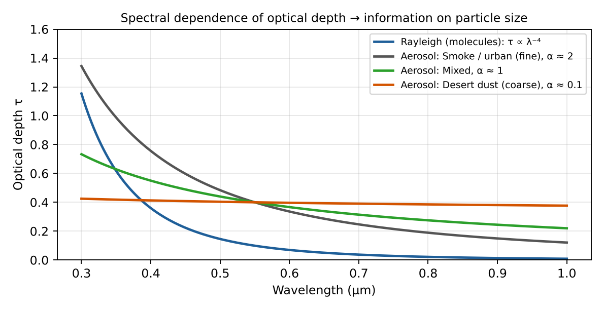
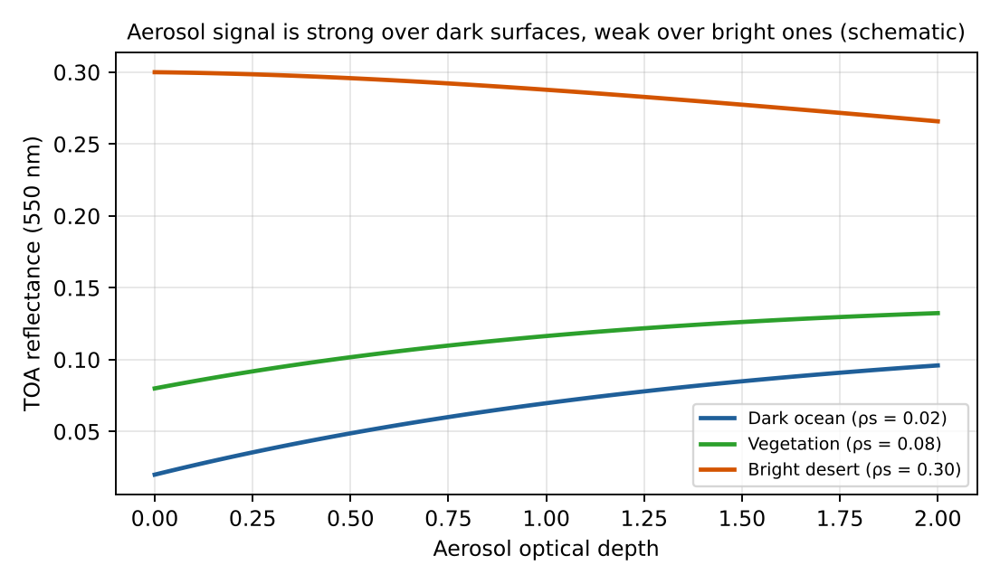

Passive remote sensing of aerosols
Study guide chapter 6
Aerosol properties measurable from space
AOD
Optical depth, usually at 550 nm. A proxy for aerosol load and PM2.5.
Ångström exponent α
τ ∝ λ−α: α ≈ 0–0.5 coarse; α ≈ 1.5–2.5 fine.
Single-scattering albedo ω0
Amount of absorption; from UV or multi-angle/polarisation.
Type and refractive index
Dust, smoke, sulfate, sea salt; MISR, POLDER, 3MI.
Layer height (ALH)
O₂ A-band (TROPOMI), MISR, TIR for dust.
UV aerosol index
Detects absorbing aerosol, even above clouds.
Principle: top-of-atmosphere reflectance
Measured quantityρ(λ, θ0, θ, φ) = π I / (μ0 E0)
Simple modelρTOA = ρRayleigh + ρaer + T·ρsurf / (1 − S ρsurf)
ρaer ≈ ω0 τa P(Θ) / (4 μ0 μ) (single scattering)
Four retrieval steps
1. Cloud screening
Select cloud-free pixels without sun glint or snow.
2. Surface reflectance
Ocean is dark; vegetation uses the 2.1 µm band; deserts use 412 nm.
3. Look-up table
Radiative transfer for a set of aerosol models, AODs and geometries.
4. Inversion
Find the AOD and aerosol model that fit best → α, fine fraction, ω0.
Ångström exponent

Figure 17 (study guide): spectral dependence of optical depth — Rayleigh and Ångström.
α = ln(τ₁/τ₂) / ln(λ₂/λ₁) = 2.03 (AOD 0.60 at 440 nm; 0.15 at 870 nm)
Effect of the surface

Figure 18 (study guide): TOA reflectance vs AOD — sensitive over dark ocean, almost insensitive over bright desert.
Passive vs active: advantages
Passive (MODIS, VIIRS, MISR, POLDER, TROPOMI)
• Wide swath, daily global coverage
• Long series since 2000
• Low cost, many bands
• Column: AOD, α, ω0
• Long series since 2000
• Low cost, many bands
• Column: AOD, α, ω0
Active (CALIOP, ATLID)
• Vertical profile, 30–60 m
• Day and night, bright surfaces, above clouds
• Depolarisation → particle shape
• Fewer surface assumptions
• Day and night, bright surfaces, above clouds
• Depolarisation → particle shape
• Fewer surface assumptions
Passive vs active: limitations
Passive
• Little or no vertical information
• Daytime and cloud-free only
• Depends on surface reflectance
• Ill-posed: uncertain type and ω0
• Daytime and cloud-free only
• Depends on surface reflectance
• Ill-posed: uncertain type and ω0
Active
• ~100 m footprint, ~16-day revisit
• Lidar ratio must be assumed
• Low S/N in daytime
• Expensive, high power
• Lidar ratio must be assumed
• Low S/N in daytime
• Expensive, high power
Exam checklist — Chapter 6
1
≥ 3 properties: AOD, α / size, ω0, type, height, UVAI
2
Measured: TOA spectral reflectance; aerosols brighten a dark surface
3
Method: cloud mask → surface reflectance → LUT → best-fit AOD + model
4
Passive: global, no vertical information; active: profiles, narrow coverage
Key points
- AOD, α, ω0, type, layer height
- Measure reflectance, retrieve with a LUT
- Bright surfaces are hard: 412 nm, multi-angle, TIR
- Passive and lidar complement each other (A-Train)